Key Metrics
The Problem
Urban air quality data arrives fragmented: low-cost sensor networks drift, satellite products (NASA GEOS-5) are coarse, and regulatory feeds (EPA AirNow, OpenAQ, OpenWeatherMap) each use different schemas and cadences. Cities need one trusted, low-latency picture — current conditions now, and a reliable 6-hour forecast.
The challenge was volume plus heterogeneity: millions of daily readings requiring calibration, fusion, and sub-second critical alerts, with an ML loop that stays accurate as seasons and sensor fleets change.
Architecture
Multi-source ingest → stream + batch → time-series store → ML → cached API → live map

Approach & Implementation
- Multi-source ingestion: Kafka buffers sensor/satellite streams while NiFi normalizes REST feeds (OpenWeatherMap, AirNow, GEOS-5, OpenAQ) into one canonical observation schema.
- Stream + batch compute: Spark Structured Streaming handles calibration, dedup, and threshold evaluation; Airflow orchestrates batch backfills, aggregation rollups, and retraining.
- Time-series warehouse: TimescaleDB hypertables for hot sensor data with continuous aggregates, S3 data lake for raw archive, dbt for tested, documented marts.
- Forecasting ensemble: LSTM for temporal dynamics plus XGBoost for meteorological features, tracked and versioned in MLflow, served for 6-hour AQI horizons.
- Low-latency serving: FastAPI with Redis caching fans out critical alerts in under 200ms; React + Mapbox dashboard renders live heatmaps and station drill-downs.
- Cloud-native ops: K8s on AWS provisioned by Terraform, with Prometheus/Grafana covering pipeline lag, model drift, and the 99.95% uptime SLA.
Challenges & Solutions
Challenge: Sensor drift and disagreement
Low-cost sensors drifted against reference stations, and co-located devices disagreed during wildfire and dust events.
Solution: Calibration + fusion
Streaming calibration against AirNow/OpenAQ reference feeds with windowed outlier rejection, fused with satellite context before scoring.
Challenge: Alert latency at scale
2.8M daily measurements through a single path risked breaching the sub-200ms critical-alert budget.
Solution: Hot-path separation
Threshold evaluation runs on the Kafka→Spark hot path with Redis-cached station state; heavy enrichment and ML scoring stay async.
Challenge: Forecast decay
Seasonal shifts and fleet changes silently degraded the 6-hour AQI model between retrains.
Solution: MLflow + drift monitors
Versioned LSTM+XGBoost runs with scheduled retraining; Grafana drift dashboards trigger early retrains when accuracy slips.
Outcome
AirSense delivers a live city air-quality picture — 15k+ sensors and 2.8M daily measurements — with critical alerts under 200ms, 92% 6-hour forecast accuracy, and a 99.95% uptime SLA on K8s/AWS.
The React/Mapbox dashboard makes the platform legible to non-engineers, while dbt-tested marts and MLflow versioning keep the data and models auditable as the network grows.